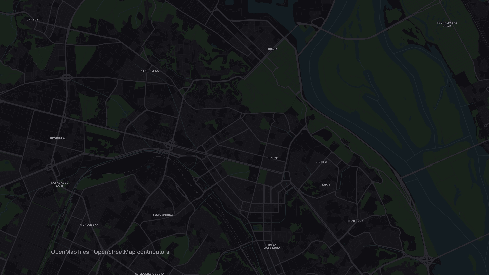

Пʼятниця. 19:00.
Сюжету поки нема.
Стендап у барі
Поділ
СТЕНДАП
20:00
СЬОГОДНІ
ЖАНРстендап
МІСЦЕ ДІЇПоділ
ПОЧАТОК20:00
У РОЛЯХти


Знайди вечір.
Обери свій жанр.
Обери свій жанр.
Поряд
Афіша міста на одній мапі.
Безкоштовно для iPhone і Android
poriad.app
poriad.app